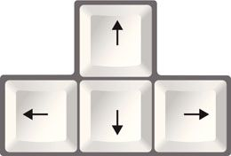

- Puntuación y longitud
La puntuación y la longitud se encuentran en la parte superior derecha.
Va aumentando progresivamente durante el transcurso del juego.
- Movimientos

Podremos jugar con las 4 flecha del teclado.
- Derecha
La serpiente se dirigirá al Oeste.
- Izquierda
La serpiente se dirigirá al Este.
- Arriba
La serpiente se dirigirá al Norte.
- Abajo
La serpiente se dirigirá al Sur.
- Espacio
Con la tecla espaciadora reiniciaremos el juego.
- Salir
Sirve para salir del programa.